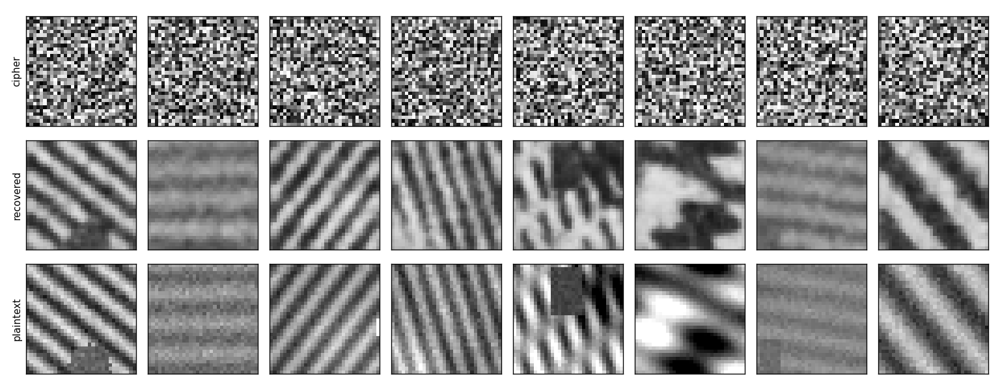

A bench that tests whether a neural network can rebuild an image from
its scrambled (encrypted) version without ever being given
the password.
MS/PhD thesis MVP • Supervisor: Dr. Ayesha Khalid
• github.com/ali-Hamza817/Encrypted-Chaos
The problem, in plain English
Many apps protect images with chaos-based encryption: fast maths that
scrambles pixels using chaotic (wildly unpredictable) number sequences. It is popular
because full-strength encryption such as AES can be slow for large images.
These schemes are judged by statistical tests: does the scrambled
image look like random noise? does changing one bit of the key change the whole output?
Almost every published scheme passes.
But passing those tests does not prove the scheme is safe against a modern
attacker who uses machine learning. Instead of doing classical maths to
recover the key, such an attacker collects many (original image, encrypted image)
pairs and trains a neural network to undo the encryption directly. Published work in
2019 and 2025 showed this can work. The open questions: how far does it go? Does it
still work on keys or schemes the network never saw? How does it compare to AES?
What we built
Encrypted-Chaos is one tool that runs the whole experiment end to end:
Encrypt. Configurable chaos ciphers (three chaotic maps; optional
pixel shuffling and value mixing; adjustable strength) plus AES-256
as an honest reference point.
Profile. Runs all the standard security tests automatically
(randomness, key sensitivity, pixel correlation, and more).
Attack. Trains CNN and U-Net models on thousands of pairs, then
measures how much of a new image they can rebuild from the ciphertext alone.
Verdict. Turns recovery quality into a plain LOW / MEDIUM / HIGH
attack-risk rating, and points to which part of the cipher caused the
weakness.
A web app (React front end, Python back end) makes it tangible: upload
an image, pick a cipher, press one button, and see the original, the encrypted version,
and the AI's reconstruction side by side with a one-line verdict. A
verification kit of test images ships with the exact score each one
should produce.

Weak chaos cipher. Top row: what an eavesdropper sees. Middle: the AI's
reconstruction from that alone, no password. Bottom: the true original.
What it shows so far
Small proof-of-concept run (one laptop CPU, a few minutes, tiny 32×32 images):
Cipher the AI attacked
Image structure recovered
Verdict
Chaos — value mixing only, one fixed key
81%
HIGH
Chaos — add pixel shuffling
5%
LOW
Chaos — fresh key for every image
5%
LOW
AES-256
5%
LOW
The weak chaos cipher was clearly broken by the AI — yet it had
scored textbook-perfect on every classical security test (randomness 7.96 out
of 8, key-sensitivity 99.6%, near-zero pixel correlation).
The classical tests did not predict resistance to a learned attack.
Pixel shuffling and per-image keys are what actually helped.
“Recovered” means the picture looks similar — not that the secret
key was extracted. That distinction is kept explicit throughout.
✓ Data pipeline + CNN and U-Net attack models + training loop.
✓ Honest scoring: improvement over a “predict the average image” baseline.
✓ Four experiment setups: same-key, unseen-key, unseen-scheme, AES.
✓ Full web app, deployable; code on GitHub with docs and a test kit.
Remaining & limitations
★Scale. Demo used tiny synthetic images on a CPU. Needs real photo datasets (CIFAR-10, medical, satellite) on a GPU for publishable numbers.
★ The headline break is the easiest case (one fixed key). Generalising to unseen keys and schemes is wired up but not yet run at scale.
★ Risk cut-offs (low / medium / high) are placeholders; need calibration.
★ Greyscale, square images, image encryption only, so far.
★ Back end needs its own Python host (cannot run on Vercel — it needs PyTorch).
Where it goes next
Run the unseen-key and unseen-scheme experiments at scale on a GPU with real datasets;
add a Transformer attack model; compare the learned attack against classical
cryptanalysis; then try to fix a chaos scheme and attack it again
(red-team / blue-team).
Why it matters
Chaos-based image encryption appears constantly in the research literature, almost
always “validated” by the same handful of statistical tests. This project
gives a concrete, repeatable way to ask a harder question — can a machine
learn to undo it? — and shows, on at least one common construction, that
the answer is yes while every traditional metric says the scheme is strong.
For a thesis, the contribution is not “we broke one cipher.” It is a
measurement framework plus the harder follow-up questions: does a single trained attacker
generalise across keys and across schemes, and do the traditional security metrics have
any predictive value for resistance to data-driven attacks?
In one line: Encrypted-Chaos encrypts images with chaos ciphers, runs
the standard security checks, then trains neural networks to rebuild the originals from
ciphertext alone and grades them — with a working web app to try it. A common weak
setup is fully recoverable despite passing every classical test; stronger setups and AES
resist. Next: scale to real images on a GPU and answer the generalisation questions.